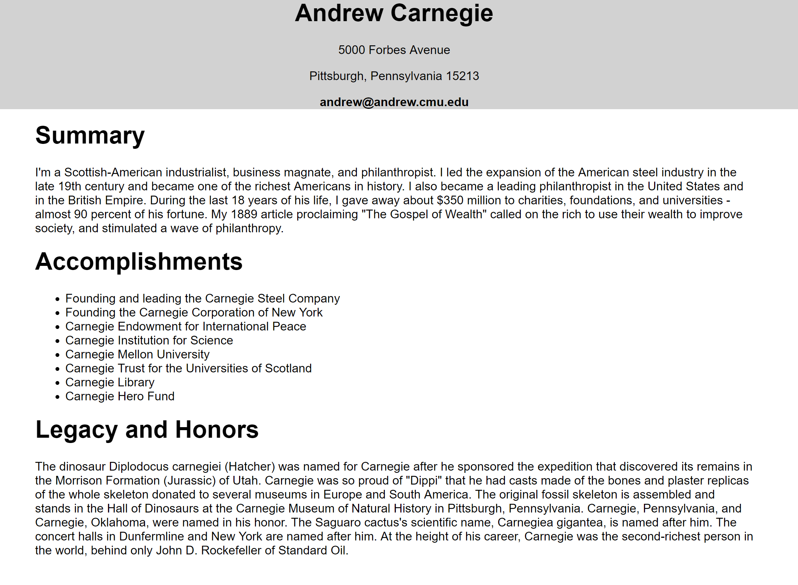
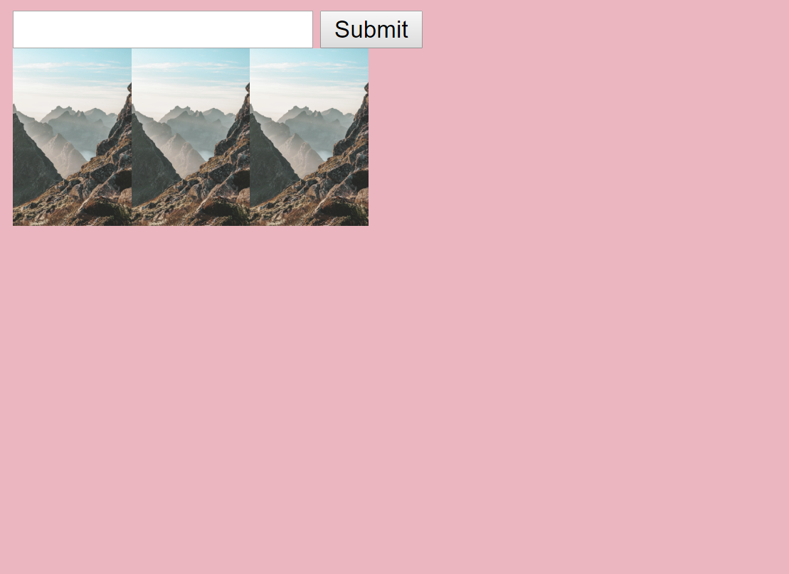
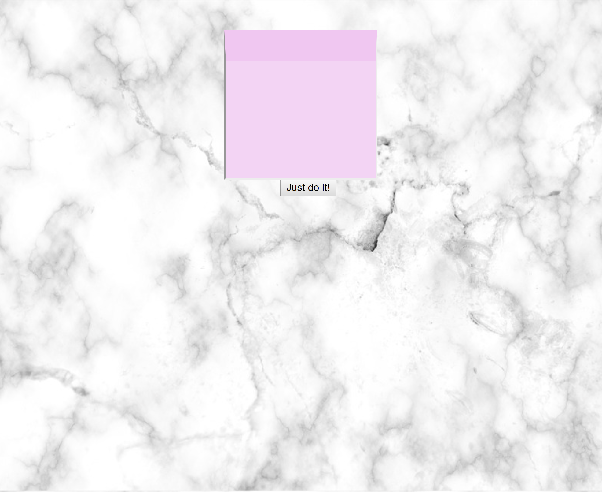
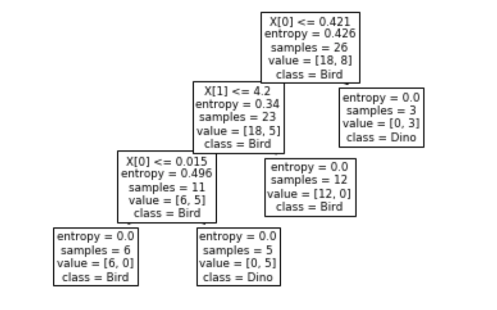

Coding at Carnegie Mellon
SAMS-tagram & Resume
This was the first time I ever used html and css. My class and I made a SAMS-tagram and added false comments from people. The resume was for Andrew Carnegie, the founder of Carnegie Mellon University. Above is the photo of the resume.
Moodboard
In this, you can enter the image adress to any picture you want and it will add the image to the page. This is meant for you to be able to crete your own Moodboard.
Typing Coach

This is actually a game. In this game, random words pop up every three seconds and you need to type the words that pop up at the top to make them disapear.
SAMS-tagram 2.0

This is like the other SAMS-tagram except you can make your own posts and profile! You can post, set a profile pic, and make a bio.
TODO List
In here, you can make a list of things you need to do in the form of sticky notes! When you're done with a task, you just click on the note and it'll disapear.
Coding at the Museum of Natural History
Decision Tree
At my internship at the American Museum of Natural History, we used python to explore different areas of science including paleo-neuroscience, astro physics, and more. My favorite project I worked on by far was a paleo neuro project where we used machine learning to make the computer differentiate between a bird brain and dinosaur brain. Th photo above is one of the trees that I generated.